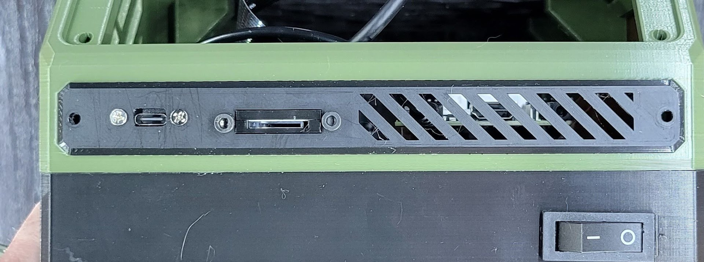
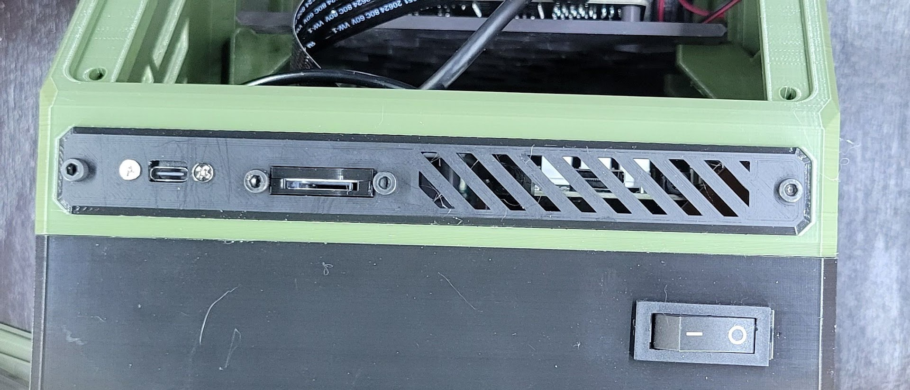
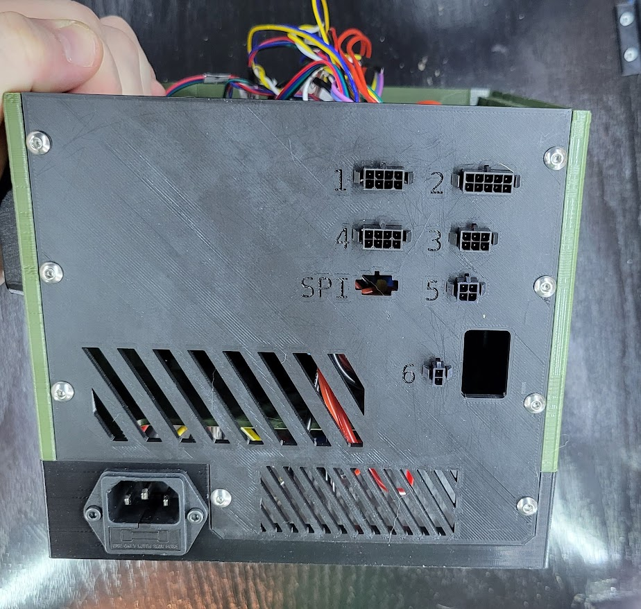

Panels
All of the panels are customizable, so this section has a less formal Parts section. Each starts with a list of the basics required to attach any type of that panel mount. Any additional parts needed for the panel we are using as an example are listed separately.
1. Front Panel
You will need at least:
| Parts | Qty | Note |
|---|---|---|
| Printed front panel | 1 | |
| M3 x 8mm machine screws | 2 | All front panels mount using two (2) of these. |
In this example, we will use:
| Parts | Qty | Note |
|---|---|---|
| Front Panel - Micro SD Extension with USB C.stl | 1 | Printed front panel example |
| Micro SD card extension | 1 | |
| USB C panel mount extension | 1 | |
| M3 x 6mm machine screws | 2 | |
| M3 x 8mm machine screws | 2 |
| Step | Example |
|---|---|
| The USB C panel mount comes with screws and attaches directly. |  |
| Carefully remove the outer shell from the Micro SD card extension. |  |
| Place the reader PCB into the shell, as in the picture. |  |
| Put the shell lid on and attach with two (2) M3 x 6mm screws. |  |
| Insert the extension shell into the front panel and attach with two (2) M3 x 8mm screws. |  |
| Push the panel into place on the main body. |  |
| Fasten the panel with two (2) M3 x 8mm screws. |  |
{kind=link}
{kind=link}
2a. Rear Panel
You will need at least:
| Parts | Qty | Note |
|---|---|---|
| A printed rear panel | 1 | |
| M4 x 8mm machine screws | 8 | All rear panels mount using eight (8) of these. |
Our rear panel in this example is a panel mount test piece, but all rear panels follow the same pattern.
Some rear panels may have a fan to mount. If you are using the rear panel to mount connectors, it is strongly advised that you insert the connectors before installing the panel or connecting any wires to the board.
| Step | Example |
|---|---|
| Push the rear panel in place against the back of the case. You may need to guide the wires out of the way. |  |
| Attach the panel using eight (8) M4 screws. |  |
{kind=link}
2b. Rear Panel Wiring
It's a good idea to attach your wiring to the MCU now, before we close up the case further.
3. Display Screen
You will need at least:
| Parts | Qty | Note |
|---|---|---|
| Printed display panel | 1 | |
| LCD display | 1 | |
| M4 x 12mm machine screws | 4 | All display screen panels mount using four (4) of these. |
For this example, we will use:
| Parts | Qty | Note |
|---|---|---|
| Generic 12864 Display Mount | 1 | Example of a printed display panel. |
| Creality 12864 display | 1 | LCD display example |
| M3 x 6mm machine screws | 4 |
Note
Some display mounts have more than one piece and require additional screws. The below is an example with a stock Creality 12864 display.
| Step | Example |
|---|---|
| Remove the knob on the display screen. It should pull off. |  |
| Slide the screen into place on the mount and fasten with four (4) M3 x 6mm screws. |  |
| Re-attach the knob to the display screen. Again, it should slide into place with light force. If your display mount has multiple pieces, attach those now (usually only applies to displays with side-mount SD card readers). | |
| Insert the display connectors and slide the cables in before the display. Fasten the display panel with four (4) M4 x 12mm screws. |  |
4. Lid
Like the rear panel, the lid is intended for customization. The below is an example for a simple lid with a handle.
You will need for any lid or pair of half-lids:
| Parts | Qty | Note |
|---|---|---|
| M3 x 8mm machine screws | 8 | See note below. |
| Printed lid | 1 |
In this example, we also use:
| Parts | Qty | Note |
|---|---|---|
| M3 x 8mm machine screws | 2 | |
| Carry handle | 1 | |
| Carry handle lid | 1 | Example of a printed lid. |
Note
0.9.8 introduces half-length lids. One half-length lid requires four (4) screws; a full length lid attaches with eight (8) The main body requires two (2) half-length lids or one (1) full-length lid.
Note
Because the screws are threaded directly into plastic, removing and reattaching the lid will eventually wear out the holes in the main body. I recommend starting with shorter (8mm) screws and gradually switching to longer ones over time to get "fresh" plastic.
Lids may use screws up to 16mm in length.
| Step | Example |
|---|---|
| Attach the handle to the lid using two (2) M3 x 8mm screws. |  |
| Use eight (8) M3 x 8mm screws to attach the lid. |  |